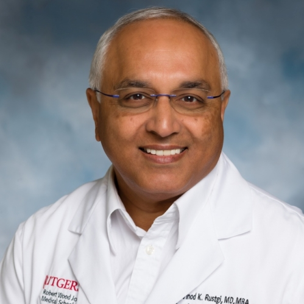

Rezdiffra franchise · MASH F2–F3 · Next-program positioning
A MASH site for the Rezdiffra franchise
The first approved MASH therapy, with outcomes and next-generation programs ahead — we're the local, high-yield MASH site to run them, ~20 min from your West Conshohocken HQ.
Why CRP is the right site for your next MASH program.
6–9
Projected randomized
1.5M+
EMR lives mined for MASH
On-site
FibroScan (CAP / kPa)
95%
Trials hit enrollment target
<21d
Study start-up

Site Capabilities Brief
Prepared forMadrigal Pharmaceuticals
the right site for MASH
The future of medicine
begins with you™
Sponsor & CRO Capabilities·August 2026
95%
of recent studies met or exceeded the sponsor's enrollment target.
In our cardiometabolic trials, we've enrolled 340% and 186% of target.
<7
Days from greenlight to first screen
Recruitment mobilizes the moment IRB clears.
10
Days to a complete regulatory package
Regulatory turns documents in parallel.
<7
Days from draft budget to contract finalized
In-house budget & contracting eliminates back-and-forth.
3
Days average query resolution
EDC queries cleared within the same business week.
1
Day average EDC data entry
CRIO source-to-EDC.

Eugene Andruczyk, MBA, DO
Investigator
OB / GYN

Lolita Vaughan, CRNP, CCRC
Investigator
Women's Health

Joseph Heether, MD
Investigator
Cardiothoracic · Alzheimer's

Brian Shaffer, MD
Investigator
Internal Medicine

Vinod Rustgi, MD, MBA
Investigator
Hepatology / Liver

Taher Modarressi, MD
Investigator
Endo / Lipidology

Michael Tomeo, MD
Investigator
Dermatology

Lawrence Leventhal, MD
Investigator
Rheumatology

Liz Usmiani
Recruitment & Ops Lead

Leticia Denato, MPH
Operations Manager

Stacey Scott, RMA
Coordinator

Ruby Pereira
Coordinator

Cady Chilensky
Coordinator

Angelina McMullen
Coordinator
6
Recruitment
Plus 6 remote coordinators
4
Regulatory
Both sites submitted in parallel
4
Quality assurance
Monitoring readiness and CAPA
2
Phlebotomy & lab
Sample processing and shipping on site
In house
Finance & contracting
No external finance queue
 AbbVie
AbbVie Merck
Merck Eli Lilly
Eli Lilly Pfizer
Pfizer Novartis
Novartis Sanofi
Sanofi Bayer
Bayer Novo Nordisk
Novo Nordisk Bristol Myers Squibb
Bristol Myers Squibb Janssen
Janssen Amgen
Amgen GSK
GSK Takeda
Takeda Daiichi Sankyo
Daiichi Sankyo Abbott
Abbott"CRP's commitment and professionalism is inspiring."IQVIA & Daiichi Sankyo
"Working with CRP's dedicated team has always been a great pleasure."Bayer
Diabetes & Obesity

Wegovysemaglutide

Ozempicsemaglutide

Mounjarotirzepatide
Migraine

Nurtec ODTrimegepant

Ubrelvyubrogepant

Quliptaatogepant
Derm & Rheum

Dupixentdupilumab

Rinvoqupadacitinib

Olumiantbaricitinib
Let's talk
Send us a protocol.
We'll respond within 48 hours.
We can review your protocol, scope a feasibility plan, and have a site qualification call on the calendar within the week.
Phone
(215) 676-6696
Philadelphia, PA
9501 Roosevelt Blvd #208Philadelphia, PA 19114
Pennington, NJ
21 Route 31 North, Suite A8Pennington, NJ 08534